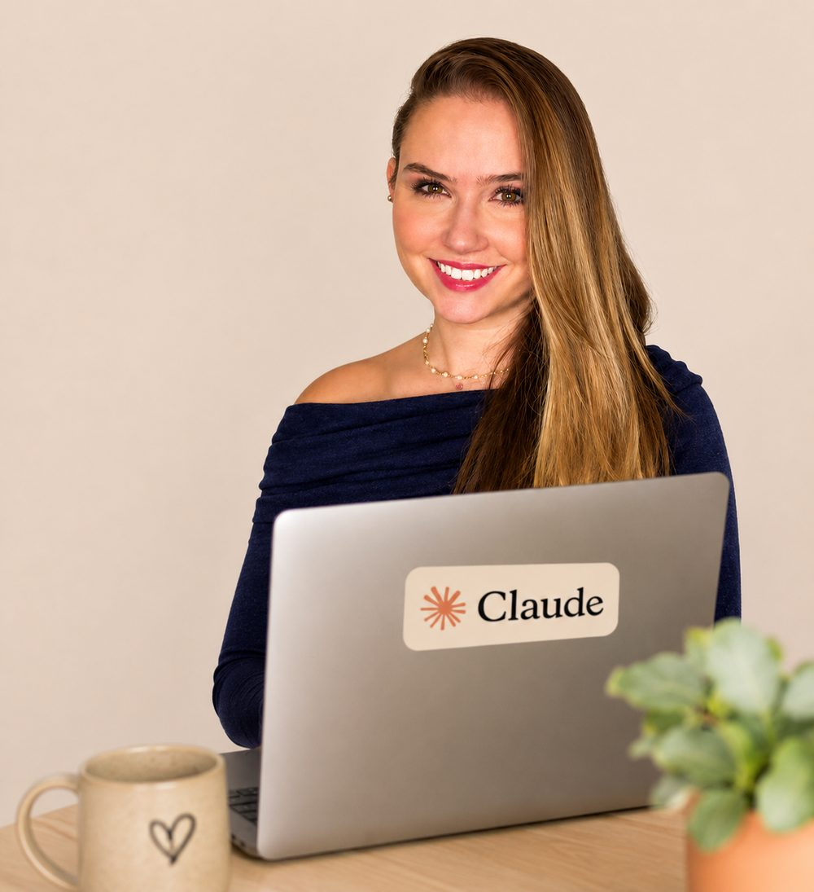

e crie seu primeiro material na aula.
Monte um Projeto com as informações do seu negócio e use esse contexto para criar um documento ou uma apresentação. A Monique te orienta ao vivo para você acompanhar, fazer e depois repetir na sua rotina.
Quero aplicar o Claude no meu negócio →Vagas limitadas. As turmas ao vivo enchem rápido.
E começa a usar de verdade.
E entende que o problema nunca foi você.
E ganha uma IA trabalhando do seu lado.
E sai da aula pensando: "eu fiz".
Por que tanta dica de IA te deixa mais travada, e não mais preparada.
Como trazer pro Claude tudo que você já construiu na IA que usa hoje.
Como montar seu primeiro Projeto sem depender de tutorial perdido.
Como transformar uma ideia em material pronto dentro da própria aula.
Como deixar o Claude trabalhando com você no navegador e no WhatsApp.
O 1º lote está ativo por R$29,90. Os próximos lotes entram conforme as vagas enchem.
Lote de abertura, primeiras vagas com o melhor investimento.
Vagas intermediárias, mesma experiência completa.
Últimas vagas antes do encerramento das inscrições.

Monique não ensina tecnologia como quem quer parecer difícil.
Ela passou 15 anos em empresas grandes, lidando com treinamento, mudança e gente real tentando usar ferramentas novas. Trabalhou em ambientes como BRF, SC Johnson e UOL e implementou tecnologia para milhares de pessoas.
Ela viu de perto uma verdade que quase ninguém fala: o problema nunca é só a ferramenta. É o medo. A confusão. A falta de alguém que traduza.
E é isso que ela faz. Monique pega o que parece complicado e mostra de um jeito simples, humano e aplicável.
Você não precisa dominar IA inteira para começar a usar.
Você não é lenta para tecnologia. Nunca foi.
Você só tentou aprender sozinha por tempo demais.
Dica solta não substitui caminho guiado. Nunca vai substituir.
Um workshop ao vivo de 3 horas. Você entra com dúvida. Faz junto com a Monique. E sai com o Claude configurado para começar a usar no seu dia a dia.
Você traz o contexto da IA que já usa, ativa a memória e monta seu primeiro Projeto.
Você cria um artefato dentro do Projeto (apresentação, material, documento) e salva sua skill de tom de voz, para a IA escrever do seu jeito.
Você gera uma apresentação no Claude Design e instala a extensão do Chrome para usar o Claude no navegador, no Instagram, no WhatsApp.
Para rever cada etapa com calma e repetir no seu ritmo.
GPTs prontos de tom de voz, estrutura do negócio e perfil de cliente. Você chega na aula preparada.
Os prompts exatos de cada etapa, organizados. Sai com tudo na mão para reaplicar.
Porque a IA não vai ficar menos presente. Vai ficar mais.
Porque seu tempo não volta. Cada tarefa manual hoje é uma hora que não volta amanhã.
Porque continuar no manual custa mais do que parece: tempo, energia e a sensação de ficar para trás.
Porque o primeiro passo certo vale mais que mais uma semana salvando vídeo que você nunca vai ver.
Para quem já tentou aprender IA e travou.
Para quem usa IA no básico e sente que poderia fazer muito mais.
Para quem quer usar tecnologia sem depender de filho, colega ou tutorial.
Para quem prefere fazer junto em vez de assistir e tentar sozinha depois.
Para quem quer dar o primeiro passo na IA com alguém do lado.
Não é para quem quer programação avançada ou uma aula teórica para assistir sem aplicar.
Com a Monique guiando cada etapa, até a ferramenta sair do campo da teoria e virar algo funcionando na sua mão.
Eu que não sei nada de IA já comecei gostando do dever de casa. Por ali ele já foi abrindo a minha cabeça e me ajudando a lapidar minha ideia.
No workshop vi que o Claude é um universo de possibilidades e que posso desenvolver muito mais coisas com ele do que eu imaginava. Espero aprender muito mais com você!
Achei a aula muito proveitosa! Principalmente porque, para quem ainda não tem muita familiaridade com o Claude, foi uma oportunidade de aprender não só sobre o chat, mas também sobre as outras funcionalidades da ferramenta, começando realmente do zero.
A maioria dos cursos e workshops que encontrei acaba partindo do princípio de que você já conhece a ferramenta e sabe, por exemplo, onde ficam as configurações e como acessar e utilizar os diferentes recursos.
Foi uma aula que ampliou bastante minha visão sobre o Claude e me ajudou a entender que a ferramenta vai muito além do chat.
Eu uso o Claude diariamente mas gasto todos meus tokens dando comandos sem estrutura, sem conhecimento, e o workshop foi um divisor de águas.
Muitas coisas já consegui me encontrar melhor hoje e auxiliar no meu trabalho. Sua didática foi muito boa e esclarecedora, muito obrigada. Já quero aprender mais!
Já trabalho na área de tecnologia há muito tempo e realmente achei incrível a forma como você explica as coisas. Aprendi muito.
Estava refém de várias ferramentas, mas agora vou investir só no Claude.
O momento UAU foi do início ao fim! A didática, a preocupação com os detalhes, sua atenção e paciência, o conteúdo, foi tudo muito bom. Adorei! Aprendi muito.
Oferta ativa do 1º lote. Os próximos lotes sobem conforme as vagas enchem.
Se participar e sentir que não foi para você, solicite a devolução dentro do prazo. Simples assim.
Sim. A aula foi feita exatamente para quem está começando e precisa de linguagem simples, sem termo técnico.
A Monique recomenda usar o Claude pago para aproveitar melhor as funções. Você vai ser orientada sobre isso antes da aula.
Sim. A aula é passo a passo, com pausas para você fazer junto. Quando travar, a Monique te ajuda na hora.
Porque aqui você não fica sozinha tentando depois. Você aplica durante a aula, com alguém do lado.
Não, e tudo bem. Você vai sair com o primeiro uso real funcionando. Esse é o começo certo.
Você recebe a gravação completa por 1 mês para rever e repetir cada etapa no seu ritmo.
Tem. São 7 dias de garantia. Participou e sentiu que não foi para você, é só pedir a devolução dentro do prazo.
Em 3 horas com a Monique, você sai com o Claude configurado e a sensação de "eu fiz".